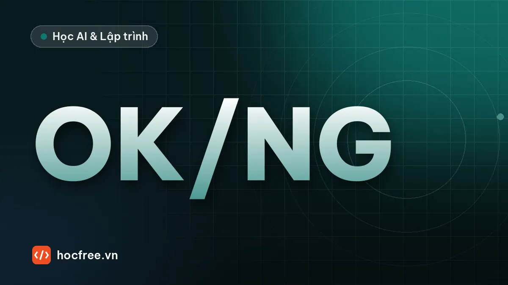

Phân ngưỡng và contour: đếm, đo vật thể bằng OpenCV
Ngưỡng cố định, Otsu, adaptive; tìm và lọc contour, đếm đồng xu và đo kích thước theo pixel, kiểm chứng bằng ảnh có đáp án.

Học xong bài này, bạn sẽ
- Phân ngưỡng cố định, Otsu, adaptive
- Tìm contour và lọc theo diện tích
- Đếm vật và đo kích thước theo pixel
Nên học trước: Lọc nhiễu và phát hiện cạnh
Nội dung bài viết
Bài "Lọc nhiễu và phát hiện cạnh" tìm đường viền của vật. Rất nhiều bài toán trong nhà máy lại cần vùng vật: đếm sản phẩm trên khay, kiểm tra có/không có linh kiện, đo diện tích, phân loại theo kích thước. Chuỗi xử lý cổ điển cho các bài toán đó là làm mịn → phân ngưỡng → tìm contour → lọc → đo. Không cần AI, chạy vài mili giây và dễ giải thích với khách hàng. Bài này dạy ba cách phân ngưỡng (cố định, Otsu, thích nghi), cách tìm và lọc contour, rồi đếm và đo vật theo pixel. Hai bước tinh chỉnh quan trọng được dành cho hai bài ngay sau: làm sạch mặt nạ ở bài "Morphology: erode, dilate, opening, closing", và các đặc trưng hình học như độ tròn, góc xoay ở bài "Đặc trưng contour và blob analysis".
opencv-python và numpy. Ảnh mẫu là một khay đồng xu vẽ bằng OpenCV, kèm file "đáp án" ghi vị trí và bán kính thật của từng đồng xu, để bạn kiểm chứng kết quả đếm và đo bằng số.1. Ảnh mẫu: khay đồng xu có đáp án
Khay chính có 7 đồng xu lớn (bán kính 28 px) và 5 đồng xu nhỏ (bán kính 20 px) màu sáng trên nền tối, không chạm nhau, cộng 6 hạt bụi nhỏ. Đèn chiếu lệch làm bên trái tối hơn bên phải, và có nhiễu cảm biến. Cùng lúc ta tạo thêm hai khay dùng cho mục 4 và bài tập 1.
import json
import cv2
import numpy as np
def tao_khay(ten, seed=0, n_lon=7, n_nho=5, den_trai=0.6):
"""Vẽ khay đồng xu, lưu ảnh và file đáp án JSON. den_trai: độ sáng mép trái so với mép phải."""
rng = np.random.default_rng(seed)
H, W = 360, 480
xu = []
while len(xu) < n_lon + n_nho: # đặt ngẫu nhiên, không cho chạm nhau
r = 28 if len(xu) < n_lon else 20
x, y = int(rng.integers(r + 10, W - r - 10)), int(rng.integers(r + 10, H - r - 10))
if all((x - a) ** 2 + (y - b) ** 2 > (r + rr + 12) ** 2 for a, b, rr in xu):
xu.append((x, y, r))
anh = np.full((H, W), 50, np.uint8)
for x, y, r in xu:
cv2.circle(anh, (x, y), r, int(rng.integers(175, 205)), -1)
for _ in range(6): # hạt bụi bán kính 2 px
cv2.circle(anh, (int(rng.integers(5, W - 5)), int(rng.integers(5, H - 5))), 2, 200, -1)
den = np.tile(np.linspace(den_trai, 1.0, W), (H, 1)) # đèn lệch: trái tối, phải sáng
anh = np.clip(anh * den + rng.normal(0, 6, (H, W)), 0, 255).astype(np.uint8)
cv2.imwrite(ten, anh)
with open(ten.replace(".png", ".json"), "w", encoding="utf-8") as f:
json.dump(xu, f)
return xu
xu = tao_khay("khay_dong_xu.png")
tao_khay("khay_toi.png", seed=0, den_trai=0.25) # cùng vị trí, đèn lệch mạnh (mục 4)
tao_khay("khay_5.png", seed=5, n_lon=6, n_nho=8) # khay cho bài tập 1
print("đáp án:", len(xu), "đồng xu |", sum(r == 28 for _, _, r in xu), "lớn,", sum(r == 20 for _, _, r in xu), "nhỏ")đáp án: 12 đồng xu | 7 lớn, 5 nhỏ2. Phân ngưỡng cố định
Phân ngưỡng biến ảnh xám thành ảnh nhị phân (mặt nạ): điểm sáng hơn ngưỡng T thành 255 (trắng, là vật), còn lại thành 0 (đen, là nền). Quy ước vật trắng trên nền đen là bắt buộc cho các hàm contour và morphology của OpenCV.
import cv2
g = cv2.imread("khay_dong_xu.png", cv2.IMREAD_GRAYSCALE)
mo = cv2.GaussianBlur(g, (5, 5), 0)
for T in (45, 55, 90, 120, 150):
_, mat_na = cv2.threshold(mo, T, 255, cv2.THRESH_BINARY)
cs, _ = cv2.findContours(mat_na, cv2.RETR_EXTERNAL, cv2.CHAIN_APPROX_SIMPLE)
lon = [c for c in cs if cv2.contourArea(c) > 300]
print(f"T={T:3d}: {len(cs):4d} contour, {len(lon):2d} contour có diện tích > 300 px²")T= 45: 315 contour, 10 contour có diện tích > 300 px²
T= 55: 18 contour, 12 contour có diện tích > 300 px²
T= 90: 17 contour, 12 contour có diện tích > 300 px²
T=120: 26 contour, 12 contour có diện tích > 300 px²
T=150: 56 contour, 3 contour có diện tích > 300 px²- T quá thấp (45): nền bên phải (mức khoảng 50) cộng nhiễu vượt ngưỡng, sinh ra hàng trăm contour giả, và các mảng nền dính vào nhau làm sai cả số contour lớn.
- T quá cao (150): các đồng xu bên trái (bị tối đi) không còn vượt ngưỡng hoặc chỉ còn mảnh vụn, đếm thiếu.
- Từ 55 đến 120 có một dải ngưỡng dùng được (luôn ra 12 contour lớn; số contour nhỏ là bụi, sẽ lọc ở mục 6). Dải này càng rộng thì hệ thống càng chịu được thay đổi ánh sáng. Khi cài đặt trạm, hãy ghi lại cả dải chứ không chỉ một giá trị, và chọn ngưỡng ở giữa dải.
| Kiểu | Kết quả | Dùng khi |
|---|---|---|
THRESH_BINARY | > T → 255, còn lại 0 | Vật sáng trên nền tối |
THRESH_BINARY_INV | > T → 0, còn lại 255 | Vật tối trên nền sáng (đèn nền/backlight, chữ in đen trên giấy) |
THRESH_TRUNC, THRESH_TOZERO | Cắt hoặc xóa một phía, giữ mức xám phía còn lại | Ít dùng để tạo mặt nạ; dùng để hạn chế vùng quá sáng |
Hàm cv2.threshold trả về hai giá trị: ngưỡng đã dùng và ảnh kết quả. Với ngưỡng cố định, giá trị đầu chỉ là T bạn truyền vào; với Otsu, đó là ngưỡng mà thuật toán tự tìm.
3. Otsu: tự tìm ngưỡng
Khi histogram có hai đỉnh (nền và vật), Otsu thử mọi ngưỡng 0–255 và chọn ngưỡng làm phương sai giữa hai nhóm (between-class variance) lớn nhất, tức là hai nhóm "nền" và "vật" tách nhau rõ nhất. Tự cài đặt để thấy nó không có gì bí ẩn:
import cv2
import numpy as np
g = cv2.imread("khay_dong_xu.png", cv2.IMREAD_GRAYSCALE)
mo = cv2.GaussianBlur(g, (5, 5), 0)
p = np.bincount(mo.ravel(), minlength=256) / mo.size # xác suất từng mức xám
muc = np.arange(256)
tot_nhat, T_tot = -1.0, 0
for T in range(1, 256):
w0, w1 = p[:T].sum(), p[T:].sum() # tỉ lệ nhóm nền (< T) và nhóm vật (>= T)
if w0 == 0 or w1 == 0:
continue
m0 = (muc[:T] * p[:T]).sum() / w0 # độ sáng trung bình từng nhóm
m1 = (muc[T:] * p[T:]).sum() / w1
pv = w0 * w1 * (m0 - m1) ** 2 # phương sai giữa hai nhóm
if pv > tot_nhat:
tot_nhat, T_tot = pv, T
t_cv, mat_na = cv2.threshold(mo, 0, 255, cv2.THRESH_BINARY + cv2.THRESH_OTSU)
print("Otsu tự viết: vật là mức >=", T_tot, "| OpenCV: vật là mức >", int(t_cv))
cv2.imwrite("mat_na_otsu.png", mat_na)
print("tỉ lệ điểm trắng:", f"{(mat_na > 0).mean():.1%}")Otsu tự viết: vật là mức >= 91 | OpenCV: vật là mức > 90
tỉ lệ điểm trắng: 13.6%Hai cách cho cùng một điểm cắt (OpenCV báo T với quy ước "lớn hơn T là vật", bản tự viết dùng "lớn hơn hoặc bằng T + 1"). Khi dùng Otsu, tham số ngưỡng truyền vào (ở đây 0) bị bỏ qua. Ghi lại ngưỡng Otsu trả về trong log là thói quen tốt: nếu nó trôi dần theo ngày, đèn hoặc camera đang có vấn đề.
4. Ngưỡng thích nghi (adaptive threshold)
Ngưỡng thích nghi tính một ngưỡng riêng cho từng điểm ảnh: trung bình (hoặc trung bình có trọng số Gaussian) của vùng blockSize × blockSize quanh điểm đó, trừ đi hằng số C. Nhờ vậy nó chịu được ánh sáng thay đổi chậm trên ảnh. Thử trên khay khay_toi.png tạo ở mục 1: cùng vị trí đồng xu nhưng đèn lệch mạnh, mép trái chỉ còn 25% độ sáng.
import cv2
mo = cv2.GaussianBlur(cv2.imread("khay_toi.png", cv2.IMREAD_GRAYSCALE), (5, 5), 0)
def thong_ke(mat_na):
n, _, stats, _ = cv2.connectedComponentsWithStats(mat_na, connectivity=8)
dt = sorted(int(a) for a in stats[1:, cv2.CC_STAT_AREA] if a > 300)
return f"{len(dt):2d} đồng xu, diện tích {dt[0]}..{dt[-1]}" if dt else "0 đồng xu"
t, m = cv2.threshold(mo, 0, 255, cv2.THRESH_BINARY + cv2.THRESH_OTSU)
print(f"Otsu (T={t:.0f}) :", thong_ke(m))
for bs in (31, 61, 151):
m = cv2.adaptiveThreshold(mo, 255, cv2.ADAPTIVE_THRESH_MEAN_C, cv2.THRESH_BINARY, bs, -10)
print(f"adaptive block={bs:3d} :", thong_ke(m))
print("diện tích lý thuyết: nhỏ π·20² ≈ 1257, lớn π·28² ≈ 2463")Otsu (T=75) : 10 đồng xu, diện tích 1235..2543
adaptive block= 31 : 12 đồng xu, diện tích 935..1793
adaptive block= 61 : 12 đồng xu, diện tích 1243..2450
adaptive block=151 : 12 đồng xu, diện tích 1304..2582
diện tích lý thuyết: nhỏ π·20² ≈ 1257, lớn π·28² ≈ 2463Đọc kết quả (diện tích ở đây là số pixel trắng của từng vùng):
- Otsu toàn cục mất 2 đồng xu ở mép trái: ở đó đồng xu đã tối gần bằng nền bên phải.
- block = 31 (nhỏ hơn đường kính đồng xu lớn, 57 px): ở giữa đồng xu, cả cửa sổ nằm trong đồng xu nên trung bình bằng chính độ sáng đồng xu, điểm ảnh không vượt được "trung bình + 10" và bị đánh dấu là nền. Đồng xu bị rỗng ruột, diện tích nhỏ hẳn, không phân loại lớn/nhỏ được nữa.
- block = 61 (lớn hơn đường kính vật một chút): đủ 12 đồng xu, diện tích sát lý thuyết.
- block = 151: cửa sổ chứa nhiều nền tối, ngưỡng hạ xuống, vật "phình" ra.
Quy tắc chọn tham số:
| Tham số | Quy tắc |
|---|---|
blockSize (lẻ, ≥ 3) | Lớn hơn kích thước vật cần tách (để cửa sổ luôn chứa cả vật lẫn nền), nhỏ hơn quy mô thay đổi của ánh sáng. Với chữ: vài lần độ dày nét chữ. |
C | Lớn hơn biên độ nhiễu, để vùng phẳng không bị lốm đốm. Với THRESH_BINARY và vật sáng, C âm nghĩa là "sáng hơn trung bình |C| mức mới là vật". |
MEAN_C hay GAUSSIAN_C | Gaussian ưu tiên điểm gần tâm, đường biên mượt hơn một chút; khác biệt thường nhỏ. |
5. Văn bản chụp dưới đèn không đều
Ứng dụng kinh điển của ngưỡng thích nghi là tách chữ trên phiếu, nhãn chụp dưới đèn không đều, trước bước OCR (chặng 7). Ta vẽ phiếu kiểm tra với chữ đen trên giấy trắng, góc trái trên bị tối, và giữ lại mặt nạ chữ thật để chấm điểm bằng IoU (Intersection over Union: phần giao chia phần hợp giữa chữ tìm được và chữ thật; 1 là hoàn hảo):
import cv2
import numpy as np
H, W = 300, 480
chu = np.zeros((H, W), np.uint8) # mặt nạ chữ thật (đáp án)
dong = ["PHIEU KIEM TRA CHAT LUONG", "Ma lo: 25A-0917 Ca: 2", "So luong OK: 1198 NG: 12",
"Nguoi kiem: Tran Van B", "Ghi chu: den trai yeu, can thay"]
for i, s in enumerate(dong):
cv2.putText(chu, s, (20, 50 + i * 50), cv2.FONT_HERSHEY_SIMPLEX, 0.75, 255, 2)
giay = 215.0 - (chu > 0) * 150.0 # chữ 65 trên giấy 215
yy, xx = np.mgrid[0:H, 0:W]
den = 0.25 + 0.75 * np.clip((xx + 0.6 * yy) / (W * 0.9), 0, 1) # góc trái trên tối
rng = np.random.default_rng(2)
anh = np.clip(giay * den + rng.normal(0, 4, (H, W)), 0, 255).astype(np.uint8)
cv2.imwrite("van_ban.png", anh)
cv2.imwrite("van_ban_dap_an.png", chu)
def iou(mat_na):
a, b = mat_na > 0, chu > 0
return (a & b).sum() / (a | b).sum()
t, otsu = cv2.threshold(anh, 0, 255, cv2.THRESH_BINARY_INV + cv2.THRESH_OTSU)
thich_nghi = cv2.adaptiveThreshold(anh, 255, cv2.ADAPTIVE_THRESH_GAUSSIAN_C,
cv2.THRESH_BINARY_INV, 31, 20)
print(f"Otsu (T={t:.0f}): IoU = {iou(otsu):.3f}, tỉ lệ ảnh bị coi là chữ {(otsu > 0).mean():.0%}")
print(f"Adaptive 31/20: IoU = {iou(thich_nghi):.3f}, tỉ lệ ảnh bị coi là chữ {(thich_nghi > 0).mean():.0%}")
print(f"Thực tế chữ chiếm {(chu > 0).mean():.0%} ảnh")Otsu (T=147): IoU = 0.215, tỉ lệ ảnh bị coi là chữ 38%
Adaptive 31/20: IoU = 0.993, tỉ lệ ảnh bị coi là chữ 8%
Thực tế chữ chiếm 8% ảnhOtsu toàn cục coi cả góc tối là "chữ" (IoU rất thấp); ngưỡng thích nghi khôi phục gần như hoàn hảo. Ở đây dùng THRESH_BINARY_INV vì chữ tối trên nền sáng, và C = 20 dương nghĩa là "tối hơn trung bình vùng 20 mức mới là chữ". Bài tập 2 sẽ khảo sát ảnh hưởng của blockSize và C.
6. Tìm contour và lọc theo diện tích
Contour là đường bao của một vùng trắng liên thông trong mặt nạ, lưu dưới dạng mảng điểm. Từ OpenCV 4 (và cả OpenCV 5), cv2.findContours trả về hai giá trị (contours, hierarchy); OpenCV 3 trả về ba giá trị. Đây là lý do nhiều code cũ trên mạng báo lỗi "too many values to unpack".
import cv2
mat_na = cv2.imread("mat_na_otsu.png", cv2.IMREAD_GRAYSCALE)
cs, h = cv2.findContours(mat_na, cv2.RETR_EXTERNAL, cv2.CHAIN_APPROX_SIMPLE)
cs_full, _ = cv2.findContours(mat_na, cv2.RETR_EXTERNAL, cv2.CHAIN_APPROX_NONE)
print("số contour:", len(cs), "| shape contour đầu:", cs[0].shape, "| hierarchy:", h.shape)
print("số điểm lưu (SIMPLE / NONE):", sum(len(c) for c in cs), "/", sum(len(c) for c in cs_full))
dien_tich = sorted(cv2.contourArea(c) for c in cs)
print("6 diện tích nhỏ nhất:", [round(a, 1) for a in dien_tich[:6]])
vat = [c for c in cs if cv2.contourArea(c) >= 300]
print("sau khi lọc diện tích >= 300:", len(vat), "vật")số contour: 17 | shape contour đầu: (5, 1, 2) | hierarchy: (1, 17, 4)
số điểm lưu (SIMPLE / NONE): 884 / 1703
6 diện tích nhỏ nhất: [4.0, 4.0, 5.0, 8.0, 11.5, 1152.0]
sau khi lọc diện tích >= 300: 12 vậtRETR_EXTERNALchỉ lấy đường bao ngoài cùng, đúng thứ cần để đếm vật. Các chế độ khác (RETR_CCOMP,RETR_TREE) và mảnghierarchydùng để tìm lỗ bên trong vật, được dạy kỹ ở bài "Đặc trưng contour và blob analysis".CHAIN_APPROX_SIMPLEchỉ lưu các điểm đầu mút của đoạn thẳng ngang, dọc, chéo, tiết kiệm bộ nhớ mà diện tích, khung bao không đổi. DùngCHAIN_APPROX_NONEkhi cần mọi điểm biên (ví dụ fitting đường tròn).- Lọc theo diện tích loại bụi và nhiễu. Ngưỡng diện tích chọn ở khoảng giữa "nhiễu lớn nhất" và "vật nhỏ nhất hợp lệ". Ở đây bụi chỉ dưới 12 px², đồng xu nhỏ nhất khoảng 1150 px², nên 300 cách xa cả hai.
contourAreacủa contour 1 điểm hoặc 1 đường thẳng bằng 0. Đừng chia cho diện tích mà không kiểm tra.
7. Đếm và đo kích thước theo pixel
Với mỗi contour hợp lệ, ta đo các đại lượng cơ bản và so với đáp án:
| Đại lượng | Hàm | Ghi chú |
|---|---|---|
| Diện tích | cv2.contourArea(c) | Diện tích đa giác qua tâm các pixel biên, hơi nhỏ hơn số pixel |
| Tâm | M = cv2.moments(c); M["m10"]/M["m00"] | Trọng tâm, có phần thập phân |
| Khung bao | cv2.boundingRect(c) | x, y, w, h theo trục ảnh |
| Đường tròn bao nhỏ nhất | cv2.minEnclosingCircle(c) | Tâm và bán kính, hợp với vật tròn |
| Đường kính tương đương | sqrt(4·A/π) | Đường kính của hình tròn có cùng diện tích, dùng được cho vật méo |
import json
import math
import cv2
import numpy as np
MM_PER_PX = 0.4 # tỉ lệ giả định, từ hiệu chuẩn (chặng 8)
g = cv2.imread("khay_dong_xu.png", cv2.IMREAD_GRAYSCALE)
_, mat_na = cv2.threshold(cv2.GaussianBlur(g, (5, 5), 0), 0, 255, cv2.THRESH_BINARY + cv2.THRESH_OTSU)
cs, _ = cv2.findContours(mat_na, cv2.RETR_EXTERNAL, cv2.CHAIN_APPROX_SIMPLE)
cs = [c for c in cs if cv2.contourArea(c) >= 300]
cs.sort(key=lambda c: cv2.boundingRect(c)[0]) # trái sang phải
dap_an = json.load(open("khay_dong_xu.json", encoding="utf-8"))
print(" # tâm (x, y) A(px²) D_tđ(px) r_bao D(mm) loại | r thật")
for i, c in enumerate(cs, 1):
A = cv2.contourArea(c)
M = cv2.moments(c)
cx, cy = M["m10"] / M["m00"], M["m01"] / M["m00"]
d_td = math.sqrt(4 * A / math.pi)
(_, _), r_bao = cv2.minEnclosingCircle(c)
loai = "lớn" if A > 1800 else "nhỏ" # ngưỡng giữa ~1250 và ~2450
r_that = min(dap_an, key=lambda t: (t[0] - cx) ** 2 + (t[1] - cy) ** 2)[2]
print(f"{i:2d} ({cx:5.1f},{cy:6.1f}) {A:6.0f} {d_td:8.1f} {r_bao:5.1f} {d_td * MM_PER_PX:5.1f} {loai:4s} | {r_that}")
so_lon = sum(cv2.contourArea(c) > 1800 for c in cs)
print(f"Tổng: {len(cs)} đồng xu ({so_lon} lớn, {len(cs) - so_lon} nhỏ)")# tâm (x, y) A(px²) D_tđ(px) r_bao D(mm) loại | r thật
1 ( 39.1, 192.0) 1152 38.3 19.7 15.3 nhỏ | 20
2 ( 68.1, 42.0) 2315 54.3 27.7 21.7 lớn | 28
3 (108.1, 268.0) 2335 54.5 27.8 21.8 lớn | 28
4 (162.0, 49.0) 2367 54.9 27.9 22.0 lớn | 28
5 (195.0, 287.0) 1196 39.0 20.0 15.6 nhỏ | 20
6 (241.0, 210.0) 2370 54.9 27.9 22.0 lớn | 28
7 (244.0, 114.0) 2370 54.9 27.9 22.0 lớn | 28
8 (300.1, 297.0) 2376 55.0 28.1 22.0 lớn | 28
9 (311.0, 30.0) 1201 39.1 20.1 15.6 nhỏ | 20
10 (381.0, 218.0) 2414 55.4 28.3 22.2 lớn | 28
11 (385.1, 82.0) 1244 39.8 20.6 15.9 nhỏ | 20
12 (437.1, 247.8) 1255 40.0 22.0 16.0 nhỏ | 20
Tổng: 12 đồng xu (7 lớn, 5 nhỏ)Nhận xét quan trọng khi đo theo pixel:
- Đếm đúng 12, phân loại đúng 7 lớn và 5 nhỏ, khớp đáp án. Ngưỡng phân loại 1800 px² nằm giữa hai nhóm, cách mỗi nhóm hàng trăm px², nên có biên an toàn lớn.
- Đồng xu vẽ với bán kính 28 có đường kính thật trên lưới pixel là 57 px (2r + 1). Đường kính tương đương và bán kính đường tròn bao hơi khác nhau và hơi khác đáp án: biên bị làm mịn, đèn lệch làm đồng xu bên trái "co" lại nhẹ khi phân ngưỡng. Sai số cỡ 1 px là bình thường cho phương pháp phân ngưỡng; độ chính xác dưới pixel cần các kỹ thuật đo cạnh ở chặng 7.
- Đồng số 12 có
r_bao= 22,0 trong khi đường kính tương đương chỉ 40,0 px: một hạt bụi dính sát mép đồng xu tạo một chỗ lồi nhỏ, đủ kéo đường tròn bao ra 2 px nhưng gần như không đổi diện tích. Đại lượng dựa trên diện tích bền với nhiễu hơn đại lượng dựa trên điểm cực biên (khung bao, đường tròn bao). - Đổi sang mm chỉ là nhân với tỉ lệ
MM_PER_PX, nhưng tỉ lệ đó phải đến từ hiệu chuẩn (chặng 8, bài quy đổi pixel sang mm), không phải đoán. Diện tích đổi bằngMM_PER_PX². - Thứ tự contour OpenCV trả về không theo trái sang phải; ở đây tự sắp xếp theo
xcủa khung bao. Cách sắp xếp theo hàng rồi cột cho khay nhiều hàng có ở bài "Đặc trưng contour và blob analysis".
8. Gom thành hàm và lưu ảnh minh chứng
Trong dự án, gom các bước thành một hàm có tham số rõ ràng, trả về danh sách kết quả có cấu trúc (như bài tổ chức pipeline ở chặng 2), và luôn lưu một ảnh minh chứng để người vận hành kiểm tra:
import cv2
import numpy as np
def dem_vat(gray, dien_tich_min=300, nguong=None, vat_toi=False, k_blur=5):
"""Trả về (danh sách vật, mặt nạ). nguong=None: dùng Otsu. vat_toi=True: vật tối trên nền sáng."""
mo = cv2.GaussianBlur(gray, (k_blur, k_blur), 0) if k_blur > 1 else gray
kieu = cv2.THRESH_BINARY_INV if vat_toi else cv2.THRESH_BINARY
if nguong is None:
t, mat_na = cv2.threshold(mo, 0, 255, kieu + cv2.THRESH_OTSU)
else:
t, mat_na = cv2.threshold(mo, nguong, 255, kieu)
cs, _ = cv2.findContours(mat_na, cv2.RETR_EXTERNAL, cv2.CHAIN_APPROX_SIMPLE)
ds = []
for c in cs:
A = cv2.contourArea(c)
if A < dien_tich_min:
continue
M = cv2.moments(c)
ds.append({"tam": (round(M["m10"] / M["m00"], 1), round(M["m01"] / M["m00"], 1)),
"dien_tich": round(A), "khung": cv2.boundingRect(c), "contour": c})
ds.sort(key=lambda v: v["khung"][0])
return ds, mat_na, t
def ve_minh_chung(gray, ds, nguong_lon=1800):
ve = cv2.cvtColor(gray, cv2.COLOR_GRAY2BGR)
for i, v in enumerate(ds, 1):
mau = (0, 200, 0) if v["dien_tich"] > nguong_lon else (255, 128, 0)
cv2.drawContours(ve, [v["contour"]], -1, mau, 2)
x, y = int(v["tam"][0]), int(v["tam"][1])
cv2.putText(ve, str(i), (x - 6, y + 5), cv2.FONT_HERSHEY_SIMPLEX, 0.5, (0, 0, 255), 2)
cv2.putText(ve, f"Tong: {len(ds)}", (10, 25), cv2.FONT_HERSHEY_SIMPLEX, 0.8, (0, 255, 255), 2)
return ve
g = cv2.imread("khay_dong_xu.png", cv2.IMREAD_GRAYSCALE)
ds, mat_na, t = dem_vat(g)
cv2.imwrite("minh_chung_dem_xu.png", ve_minh_chung(g, ds))
print(f"ngưỡng Otsu {t:.0f}, đếm được {len(ds)} vật, đã lưu minh_chung_dem_xu.png")ngưỡng Otsu 90, đếm được 12 vật, đã lưu minh_chung_dem_xu.pngẢnh minh chứng tô xanh lá đồng xu lớn, xanh dương đồng xu nhỏ, đánh số theo thứ tự trái sang phải giống bảng in ra. Khi khách hàng hỏi "tại sao khay này báo thiếu", bạn mở ảnh này thay vì giải thích bằng lời. Hàm trả về cả ngưỡng đã dùng để ghi log.
9. Lỗi thường gặp
| Hiện tượng | Nguyên nhân | Cách sửa |
|---|---|---|
| Đếm ra 1 vật bằng cả khung hình | Vật tối trên nền sáng mà dùng THRESH_BINARY: nền thành vật | THRESH_BINARY_INV |
| Hàng trăm vật giả | Nhiễu, bụi, ngưỡng quá sát nền | Lọc nhiễu trước, lọc diện tích, morphology (bài sau) |
| Thiếu vật ở một phía ảnh | Ánh sáng không đều với ngưỡng toàn cục | Sửa đèn; hoặc adaptive threshold với blockSize lớn hơn vật |
| Vật rỗng ruột, diện tích nhỏ bất thường | blockSize của adaptive nhỏ hơn vật | Tăng blockSize |
| Hai vật đếm thành một | Vật chạm nhau | Tách bằng watershed (bài "Watershed: tách các vật dính nhau") hoặc tách cơ khí |
| Khay trống vẫn đếm ra vật | Otsu luôn chia ảnh làm hai nhóm | Kiểm tra độ chênh hai nhóm, hoặc dùng ngưỡng cố định khi đèn ổn định |
| "too many values to unpack" | Code viết cho OpenCV 3 | cs, h = cv2.findContours(...) |
10. Bài tập
Bài 1. Đếm số đồng xu trong khay khay_5.png (tạo ở mục 1 với seed=5, 6 đồng lớn, 8 đồng nhỏ) và in diện tích từng đồng. So số đếm với file đáp án JSON.
Xem đáp án
import json
import cv2
g = cv2.imread("khay_5.png", cv2.IMREAD_GRAYSCALE)
_, m = cv2.threshold(cv2.GaussianBlur(g, (5, 5), 0), 0, 255, cv2.THRESH_BINARY + cv2.THRESH_OTSU)
cs, _ = cv2.findContours(m, cv2.RETR_EXTERNAL, cv2.CHAIN_APPROX_SIMPLE)
cs = sorted([c for c in cs if cv2.contourArea(c) >= 300], key=lambda c: cv2.boundingRect(c)[0])
for i, c in enumerate(cs, 1):
print(f"đồng {i:2d}: diện tích {cv2.contourArea(c):6.0f} px²")
dap_an = json.load(open("khay_5.json", encoding="utf-8"))
print("đếm được:", len(cs), "| đáp án:", len(dap_an), "|", "ĐÚNG" if len(cs) == len(dap_an) else "SAI")đồng 1: diện tích 1154 px²
đồng 2: diện tích 2318 px²
đồng 3: diện tích 1156 px²
đồng 4: diện tích 1139 px²
đồng 5: diện tích 1156 px²
đồng 6: diện tích 1151 px²
đồng 7: diện tích 2364 px²
đồng 8: diện tích 2369 px²
đồng 9: diện tích 2371 px²
đồng 10: diện tích 2386 px²
đồng 11: diện tích 1230 px²
đồng 12: diện tích 1256 px²
đồng 13: diện tích 2441 px²
đồng 14: diện tích 1264 px²
đếm được: 14 | đáp án: 14 | ĐÚNGDiện tích tách thành hai nhóm rõ rệt (quanh 1250 và quanh 2450). Với ảnh của bạn, chỉ cần đổi tên file trong cv2.imread. Nếu bạn chụp đồng xu thật, đặt chúng trên nền tối, không chạm nhau, đèn chiếu từ trên xuống đều.
Bài 2. Dùng adaptive threshold cho ảnh văn bản chụp dưới đèn không đều (van_ban.png, mục 5). Thử blockSize = 7, 15, 31, 61 và C = 5, 10, 20, in IoU. Giải thích vì sao C = 5 luôn kém.
Xem đáp án
import cv2
anh = cv2.imread("van_ban.png", cv2.IMREAD_GRAYSCALE)
chu = cv2.imread("van_ban_dap_an.png", cv2.IMREAD_GRAYSCALE) > 0
print("block | C=5 C=10 C=20")
for bs in (7, 15, 31, 61):
hang = []
for C in (5, 10, 20):
m = cv2.adaptiveThreshold(anh, 255, cv2.ADAPTIVE_THRESH_GAUSSIAN_C, cv2.THRESH_BINARY_INV, bs, C) > 0
hang.append((m & chu).sum() / (m | chu).sum())
print(f"{bs:5d} | " + " ".join(f"{v:.3f}" for v in hang))block | C=5 C=10 C=20
7 | 0.432 0.794 0.551
15 | 0.450 0.917 0.889
31 | 0.480 0.933 0.993
61 | 0.557 0.951 1.000- C = 5 nhỏ hơn biên độ nhiễu (độ lệch chuẩn 4, dao động ± 8–12 mức là thường): trên giấy trắng phẳng, rất nhiều điểm tối hơn trung bình 5 mức chỉ vì nhiễu, nên giấy bị lốm đốm "chữ". Quy tắc: C lớn hơn khoảng 2–3 lần độ lệch chuẩn nhiễu.
- blockSize = 7 chỉ hơn độ dày nét chữ (khoảng 2–3 px) một chút: ở giữa các nét đậm, cửa sổ gần như toàn chữ, chữ bị rỗng. Từ 31 trở lên, kết quả gần hoàn hảo với C đủ lớn.
- C quá lớn sẽ làm mất chữ ở vùng tối, nơi chữ chỉ tối hơn giấy khoảng 37 mức. Hãy luôn kiểm tra ở vùng tối nhất của ảnh.
Bài 3. Trạm đếm đai ốc dùng đèn nền: đai ốc hiện lên thành hình lục giác đen trên nền trắng. Tạo ảnh có 9 lục giác đen (bán kính 22 px) trên nền 230 và đếm chúng. Thử cả hai kiểu THRESH_BINARY và THRESH_BINARY_INV.
Xem đáp án
import cv2
import numpy as np
anh = np.full((300, 400), 230, np.uint8)
goc = np.deg2rad(np.arange(0, 360, 60))
for i in range(9):
cx, cy = 70 + (i % 3) * 130, 60 + (i // 3) * 90
pts = np.stack([cx + 22 * np.cos(goc), cy + 22 * np.sin(goc)], axis=1).astype(np.int32)
cv2.fillPoly(anh, [pts], 25)
anh = np.clip(anh + np.random.default_rng(0).normal(0, 5, anh.shape), 0, 255).astype(np.uint8)
mo = cv2.GaussianBlur(anh, (5, 5), 0)
for ten, kieu in [("THRESH_BINARY ", cv2.THRESH_BINARY), ("THRESH_BINARY_INV", cv2.THRESH_BINARY_INV)]:
_, m = cv2.threshold(mo, 0, 255, kieu + cv2.THRESH_OTSU)
cs, _ = cv2.findContours(m, cv2.RETR_EXTERNAL, cv2.CHAIN_APPROX_SIMPLE)
dt = [round(cv2.contourArea(c)) for c in cs if cv2.contourArea(c) >= 300]
print(f"{ten}: {len(dt)} vật, diện tích {sorted(set(dt))}")THRESH_BINARY : 1 vật, diện tích [119301]
THRESH_BINARY_INV: 9 vật, diện tích [1285, 1300]Không đảo, cả nền trắng thành một "vật" khổng lồ (các lục giác là lỗ bên trong nó, RETR_EXTERNAL bỏ qua). Với THRESH_BINARY_INV (tham số vat_toi=True của hàm dem_vat ở mục 8), đếm đúng 9. Diện tích lý thuyết của lục giác đều bán kính 22 là (3√3/2)·22² ≈ 1257 px²; số đo 1285–1300 px² lớn hơn khoảng 2–3% vì fillPoly tô cả các pixel nằm trên đường biên. Chênh lệch kiểu này là lý do dung sai luôn được lấy từ mẫu thật đo bằng chính chương trình, không lấy từ công thức.
Tóm tắt
- Phân ngưỡng tạo mặt nạ vật trắng nền đen; vật tối dùng
THRESH_BINARY_INV. - Ngưỡng cố định khi đèn ổn định (chọn giữa dải dùng được); Otsu tự tìm ngưỡng khi histogram có hai đỉnh; adaptive khi ánh sáng không đều, với blockSize lớn hơn vật và C lớn hơn nhiễu.
findContours(OpenCV 4/5) trả về 2 giá trị;RETR_EXTERNALđể đếm; lọc contour theo diện tích để bỏ bụi, nhiễu.- Đo theo pixel: diện tích, tâm, khung bao, đường tròn bao, đường kính tương đương; đổi sang mm bằng tỉ lệ từ hiệu chuẩn.
- Luôn kiểm chứng với đáp án (ảnh mẫu, mẫu chuẩn) và lưu ảnh minh chứng.
Bài tiếp theo: Morphology: erode, dilate, opening, closing, bộ công cụ làm sạch mặt nạ khi nhiễu dính vào vật và vật có lỗ thủng.
Bài tập thực hành
- Đếm số đồng xu trong ảnh và in diện tích từng đồng.
- Dùng adaptive threshold cho ảnh văn bản chụp dưới đèn không đều.
Làm xong bài tập mới chuyển sang bài tiếp theo: tự viết code là cách duy nhất để nhớ lâu.